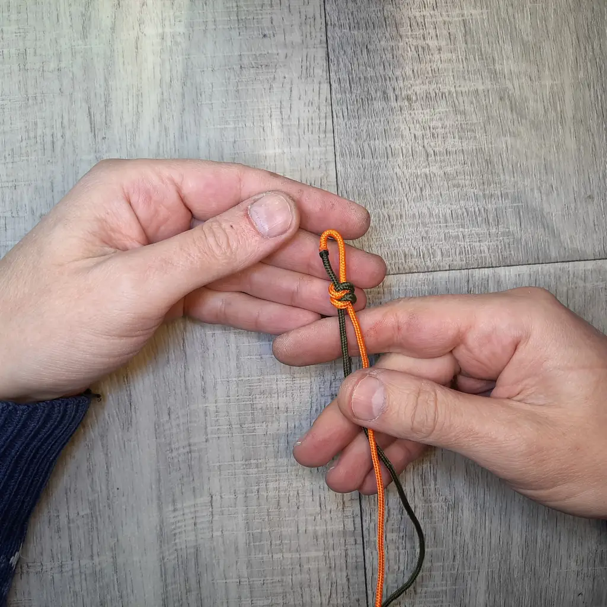
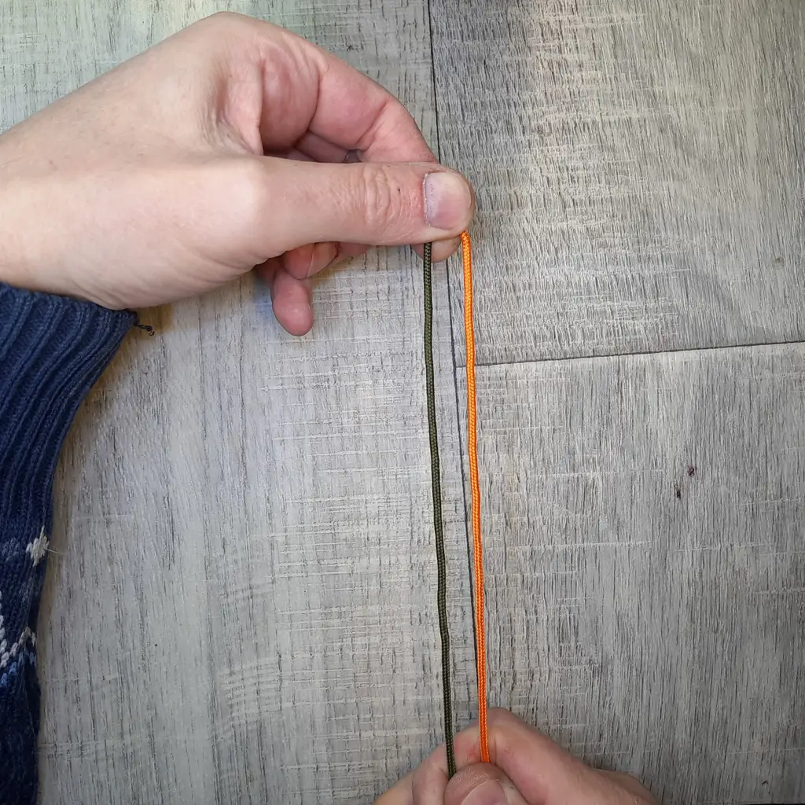
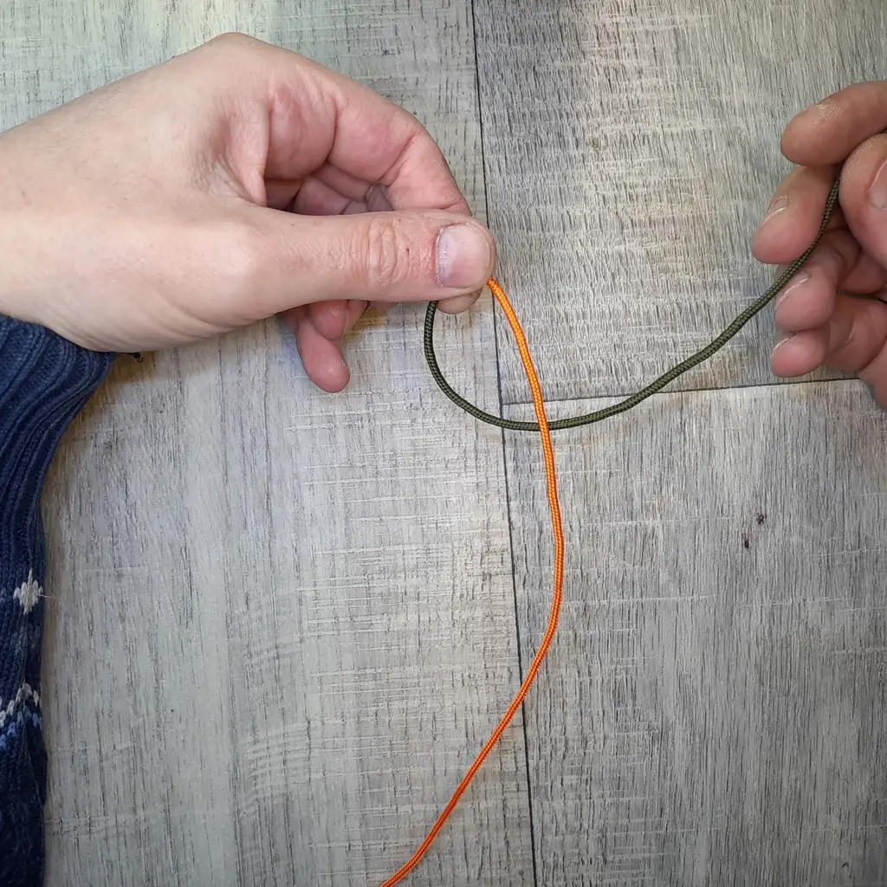
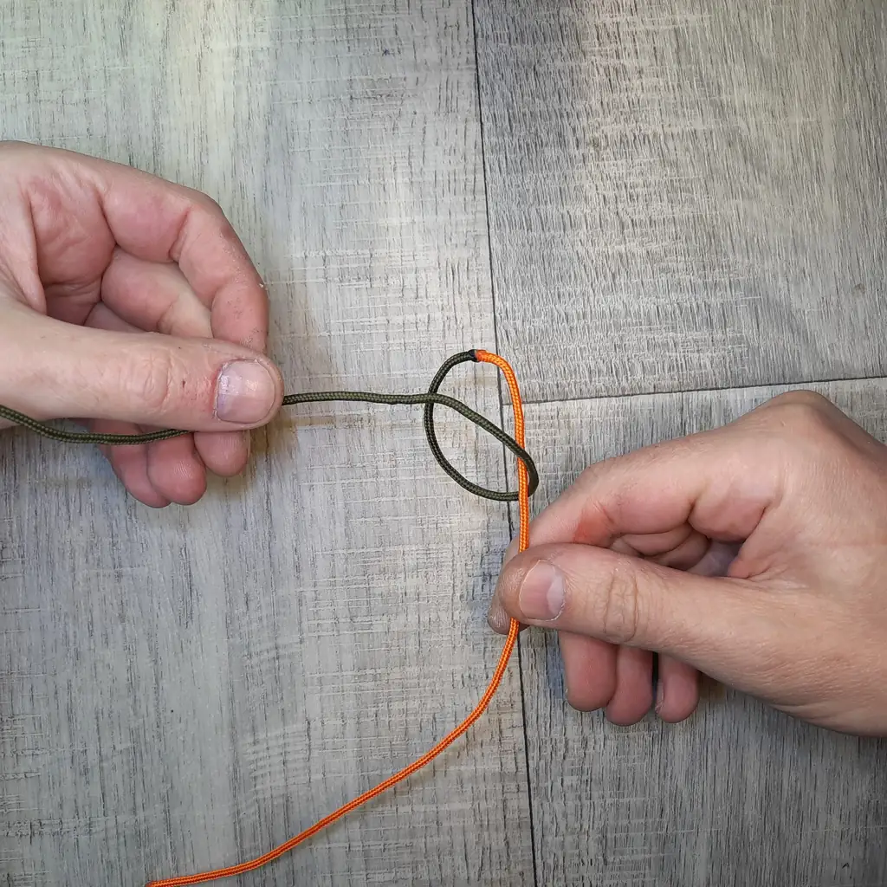
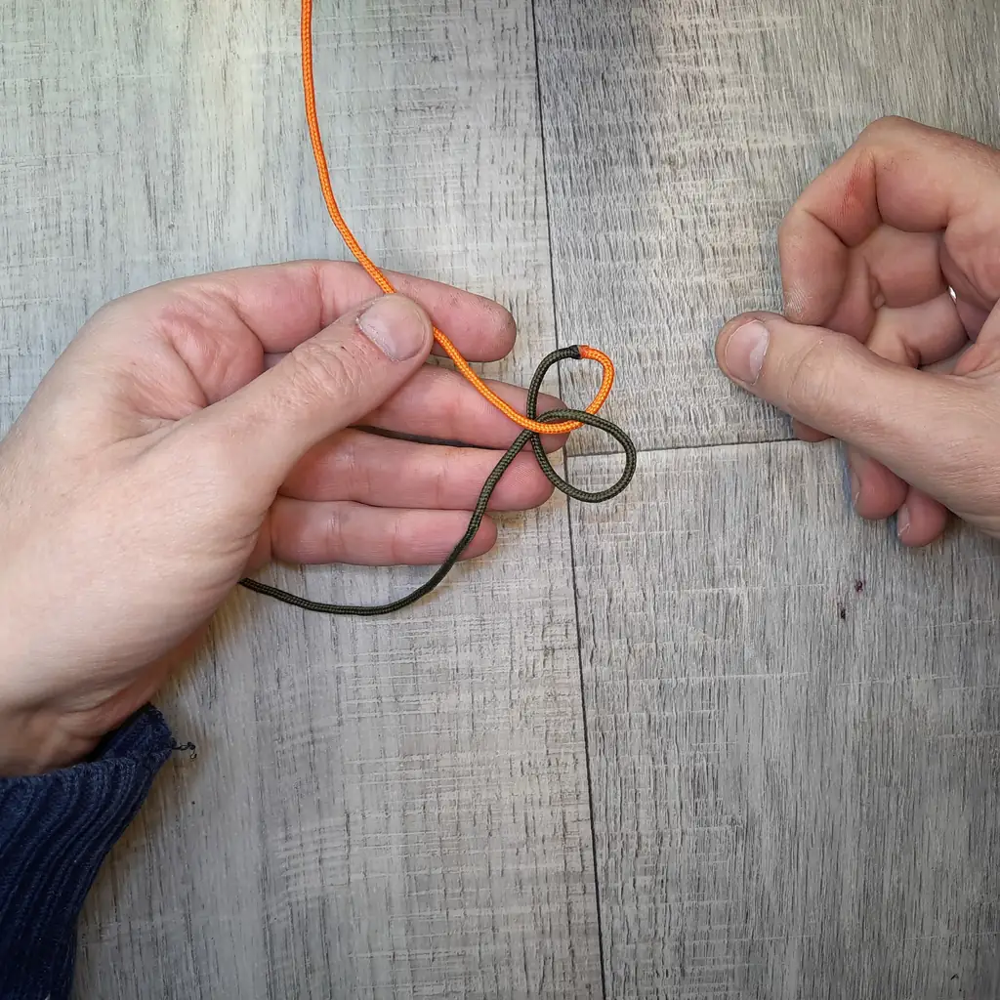
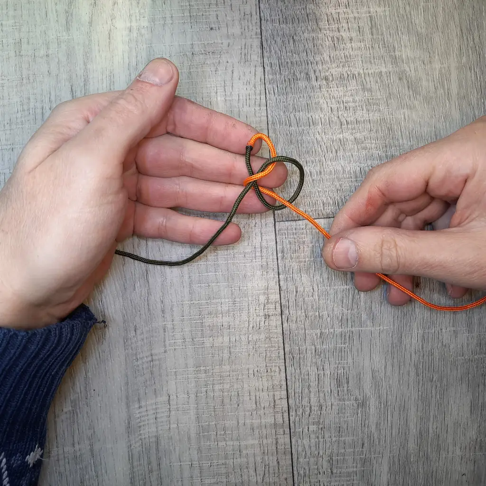
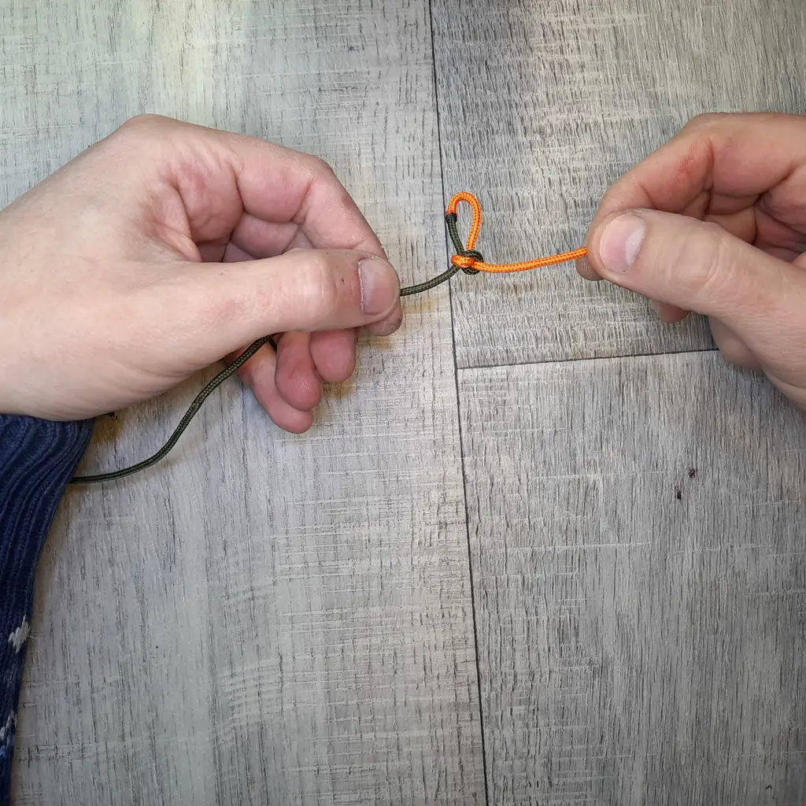
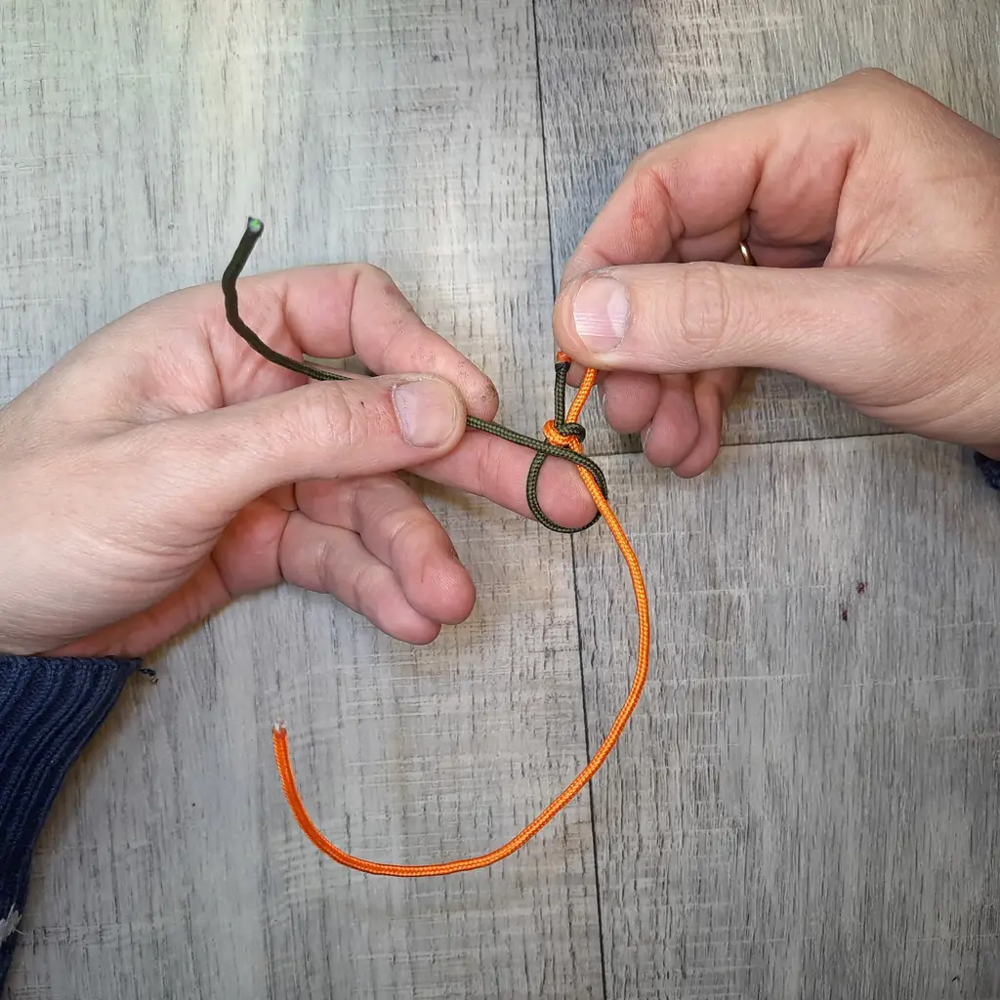
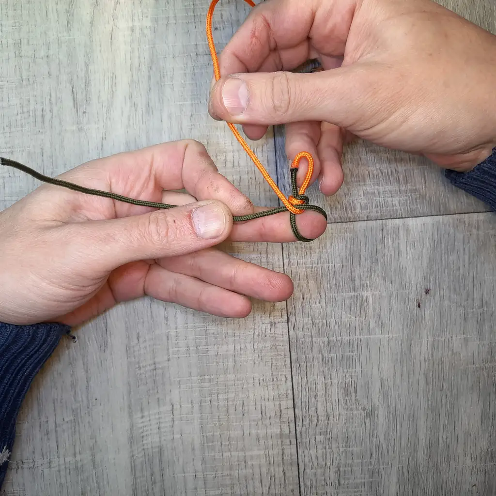
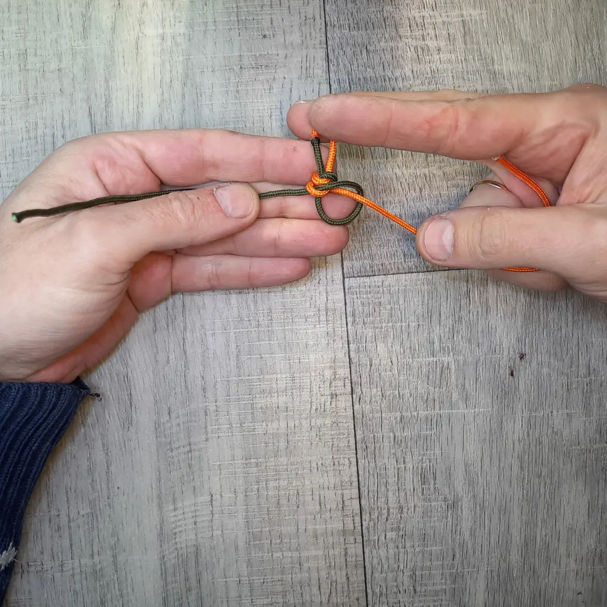

В этой инструкции показан именно чистый вариант Snake Knot: только само плетение, без установки темлячной бусины и без финального декоративного узла. Это удобно для обучения, потому что внимание остаётся на самом рисунке и порядке движений. Если вам нужен именно готовый темляк, посмотрите также плетение «змейка» из паракорда и базовый материал как сделать темляк.
Что важно в этом варианте
Здесь разбирается не готовое изделие с оформлением, а именно сам змеиный узел из паракорда как техника. Поэтому статья логично дополняет материалы про «змейку», «кобру» и другие способы плетения паракорда.
Содержание
Что понадобится
- Паракорд. Для обучения удобно брать один или два контрастных цвета.
- Ножницы для аккуратной подрезки концов.
- Зажигалка для оплавления после завершения изделия.
- Фиксация по желанию: зажим, клипса или любая удобная опора.
Если хочется сначала разобраться в общей логике работы со шнуром, полезно открыть статью как сделать темляк. А если нужен более плотный и рельефный вариант, сравните этот способ с темляком «кобра».
Змеиный узел из паракорда (Snake Knot): пошагово
Сложите шнур и подготовьте старт

Сложите паракорд так, чтобы было удобно держать центральную часть и свободные концы. Старт может быть в виде петли или просто закреплённого начала — в зависимости от того, какое изделие вы хотите получить дальше.
Сформируйте первую боковую петлю

Одним концом сделайте первую петлю. Здесь важно не торопиться: ровная стартовая форма помогает сразу задать аккуратный ритм всему плетению.
Проведите второй конец в противоположную сторону

Второй конец шнура проведите с противоположной стороны через центр будущего узла. На этом этапе уже начинает собираться характерный рисунок Snake Knot.
Соберите и подтяните первый узел

Перед затяжкой проверьте, чтобы форма оставалась симметричной. Подтягивайте плавно, без резкого рывка — так проще сохранить ровный старт.
Повторите узел зеркально

Следующий элемент выполняется в обратную сторону. Именно чередование левого и правого прохода создаёт тот самый змеиный ритм, из-за которого узел и получил своё название.
Продолжайте плетение по той же схеме

После второго и третьего повторов логика становится совсем понятной. Главное — не сбиваться с чередования сторон и периодически выравнивать центральную ось.
Следите за одинаковой плотностью

Если один элемент затянут сильнее другого, плетение начинает уходить в сторону. Поэтому лучше подтягивать каждое переплетение спокойно и одинаково.
Наберите нужную длину

Когда рисунок уже читается стабильно, остаётся просто повторять один и тот же узел. Длину выбирайте под конкретную задачу: темляк, брелок или подвес.
Получите готовый участок плетения

На этом этапе уже видно, как выглядит змеиный узел без каких-либо дополнительных деталей. Такой вариант полезен именно как чистая техника, которую потом можно использовать в разных изделиях.
Финальный вид плетения без дополнительного узла
Так выглядит уже сформированное плетение в этом мастер-классе: без бусины, без отдельного финального узла и без смешения двух тем в одной инструкции.
Как сделать плетение ровным
- Сразу следите за одинаковым размером петель слева и справа.
- Не затягивайте стартовый узел рывком — сначала выровняйте форму.
- Периодически проверяйте центральную линию, чтобы рисунок не уходил в сторону.
- Для первых попыток удобно брать контрастные цвета: так проще понять, какой конец сейчас работает.
Где использовать такой узел
Змеиный узел из паракорда хорошо подходит для компактных изделий: темляков, небольших брелков, подвесов на сумку и декоративных шнуров. Если нужен уже не отдельный узел, а более классический вариант готового изделия, посмотрите страницу плетение «змейка» из паракорда. А если хочется объёмнее и плотнее, полезно сравнить этот способ с темляком «кобра».
Что делать дальше
Если этот материал уже разобран, дальше лучше перейти к ближайшим связанным темам — без длинного списка и лишних повторов.
Видео процесса
Видео удобно для того, чтобы поймать ритм движений. Но повторять руками обычно проще именно по фото и пошаговым кадрам, поэтому здесь видео работает как дополнение к основной инструкции.
Частые вопросы
Чем змеиный узел отличается от плетения «змейка»?
Здесь акцент сделан именно на самом узле и его повторении как техники. Статья про «змейку» ближе к готовому изделию и связана с темляком как целой конструкцией.
Можно ли плести Snake Knot из одного цвета?
Да. Но для первых попыток два контрастных цвета удобнее: так понятнее последовательность проходов.
Подходит ли этот узел для темляка на нож?
Да, подходит. Особенно если нужен аккуратный и не слишком массивный рисунок без лишнего объёма.
Можно ли потом добавить бусину?
Можно. Но в этом мастер-классе специально разобран чистый вариант без бусины, чтобы не смешивать технику плетения и оформление готового изделия.
Какой шнур лучше использовать?
Лучше брать шнур, который удобно держит форму после подтяжки и нормально переносит подрезку и оплавление концов.